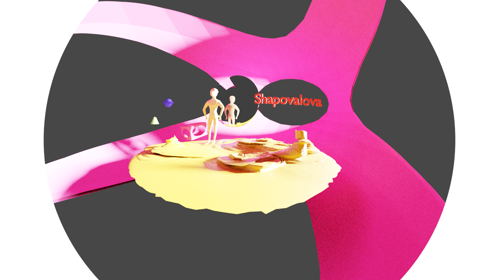
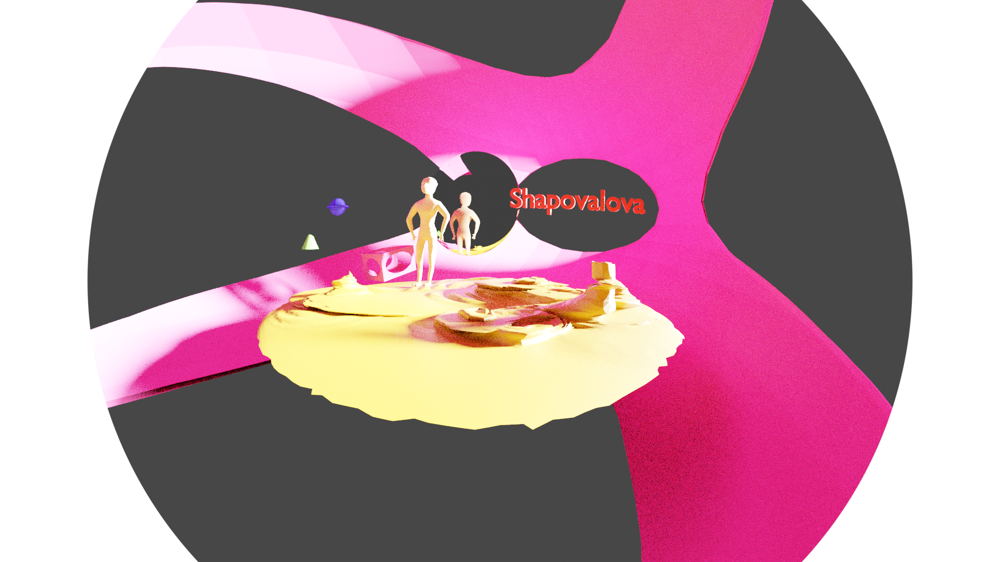

Лабораторная работа в blender
Я увлеклась процессом и сделала нормального человека и, к сожалению, слишком поздно поняла, что так просто его не раскрасить

Я увлеклась процессом и сделала нормального человека и, к сожалению, слишком поздно поняла, что так просто его не раскрасить
